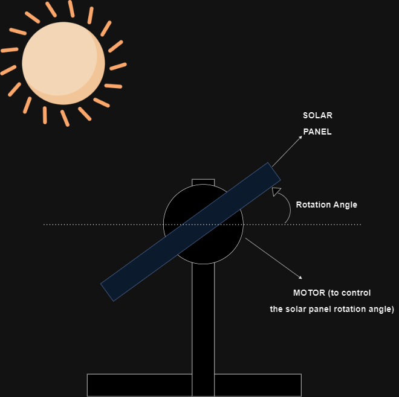
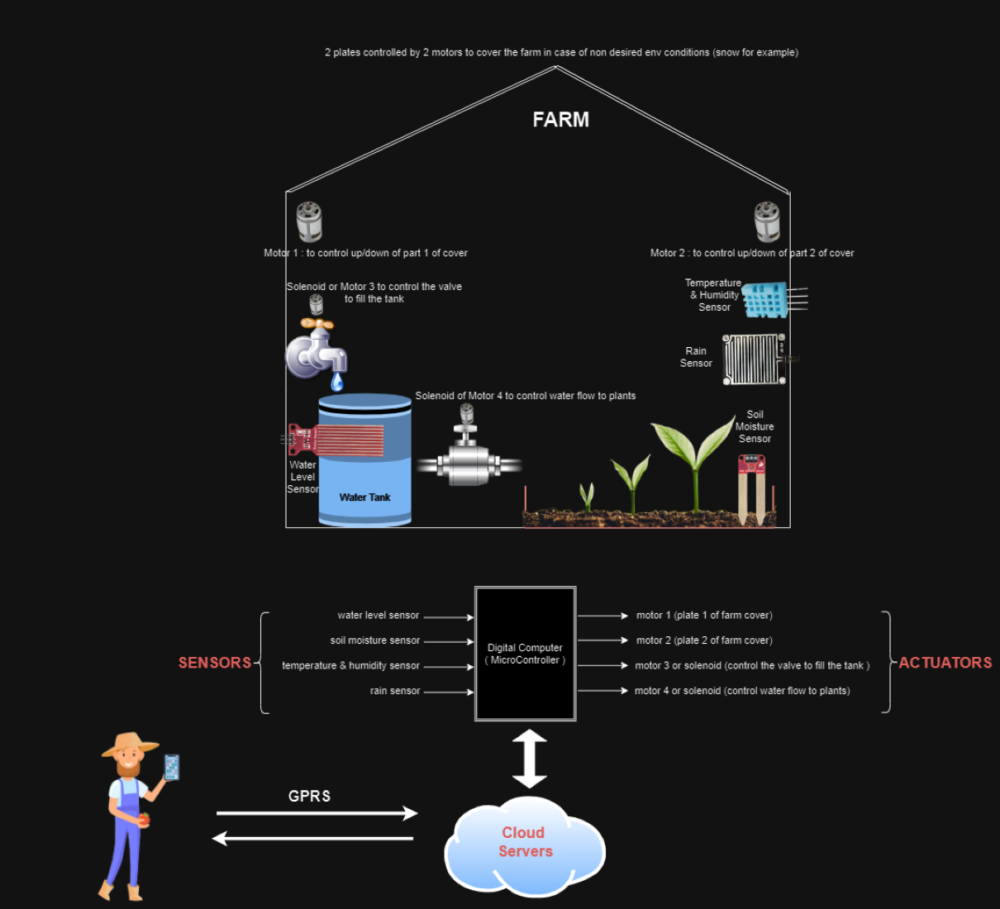
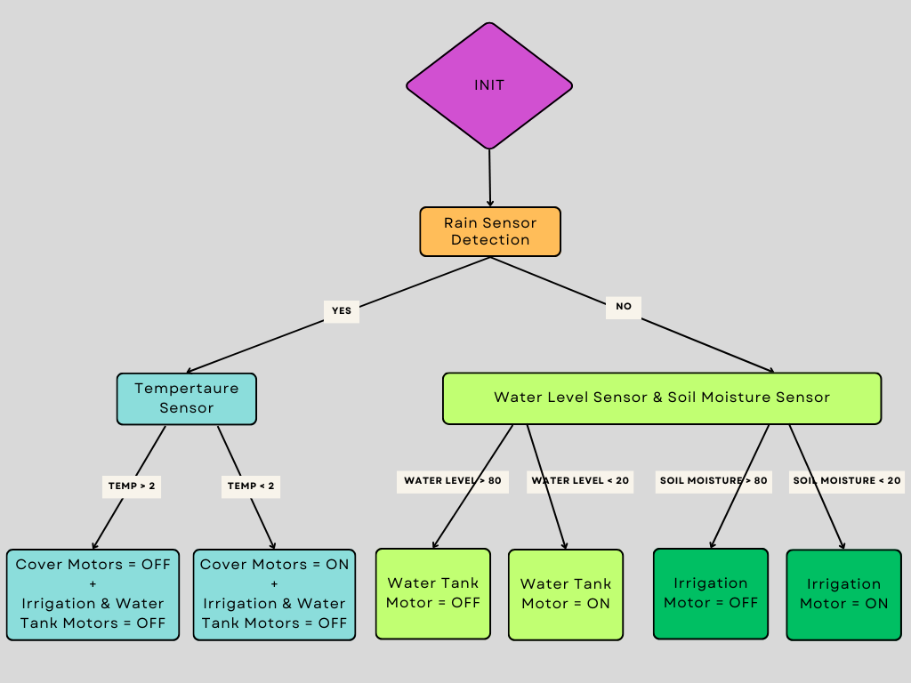
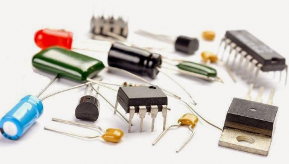
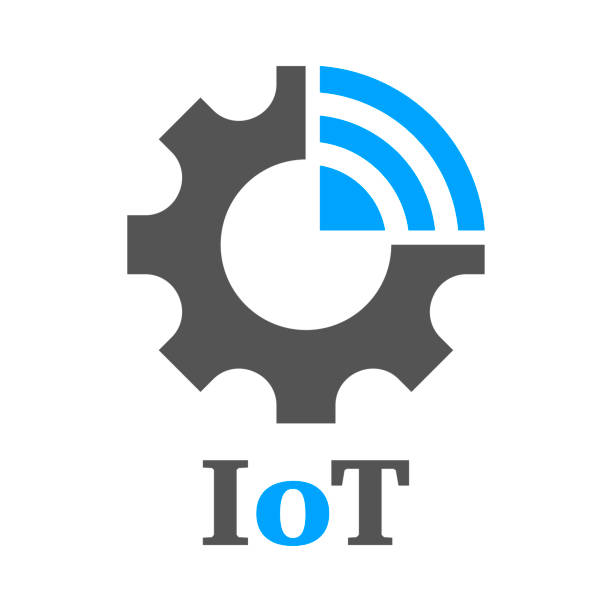
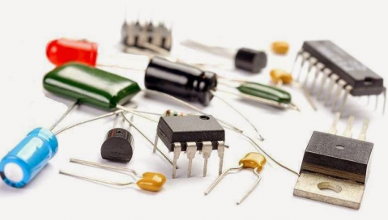
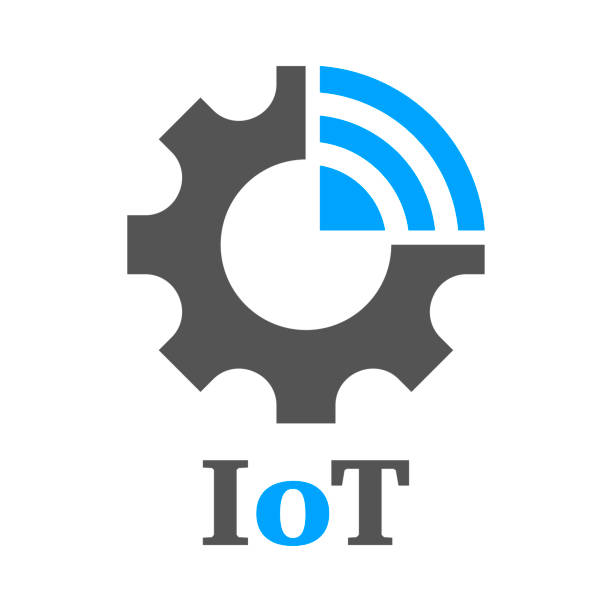
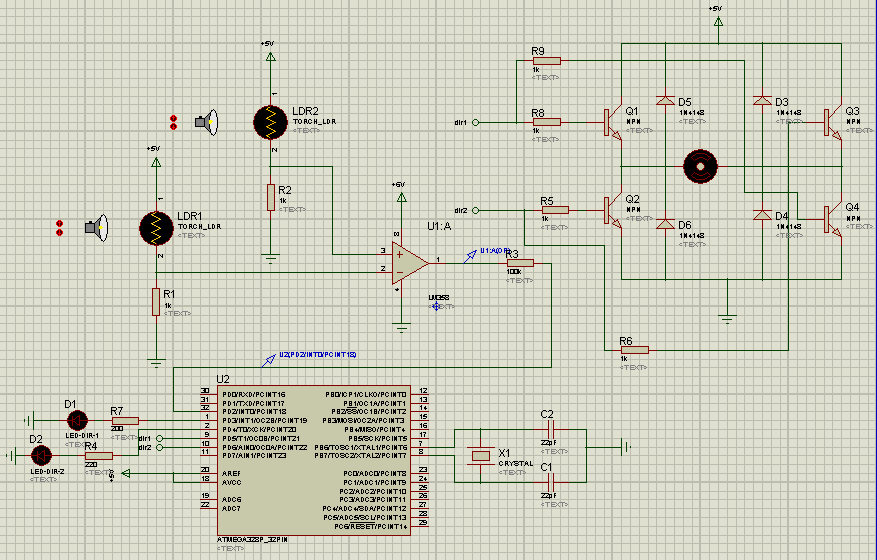
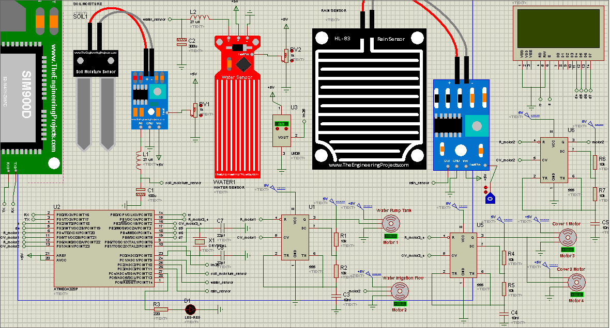

I - Concept & System Design Phase :
1 - Sensors & Actuators :
a - Sensors :
LDR sensor : to measure the amount of light in specific contour .
Soil moisture sensor : to measure the farm soil moisture .
Water level indicator : to get the percentage of water in the water tank .
Temperature sensor : to get the farm temperature .
Rain sensor : to get the rain status .
b - Actuators :
DC Motor : to rotate the solar panel to specific location with respect to sun lights location .
Servo Motors :
Servo Motor 1 : to control the water tank electrovalve .
Servo Motor 2 : to control the water irrigation valve .
Servo Motor 3 + 4 : to control the plates to cover the farm in case of bad weather condition (for example the snow that can destroy the plants) .
2 - General Architecture (Sensors & Actuators Placement) :


3 - System Operations FlowChart :

II - Engineering Phase :
1 - Technologies & Tools :
a - Technologies & Components :
4 Sensors (rain/soil moisture/temperature/water level) + 4 servo motors + GPRS Module + LCD + Atmgea328P MicroController + NE555 'PWM generator Mode' .
b - Tools (software,firmware,hardware) :
 




2 - Schematics :

